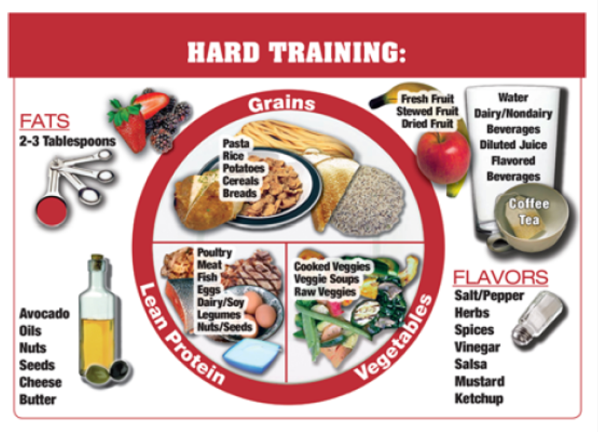

As student-athletes, your daily and weekly energy expenditure is much greater than the average college student. Prioritizing balanced nutrition and hydration is vital for sustaining our energy, maximizing our performance, and preventing fatigue.
Energy Availability = Food Energy Intake - Energy Expenditure. Nutrition can greatly impact what our energy looks like throughout the day.
Symptoms that could be an indicator of low energy availability due to nutrition habits include: fatigue or feeling "sluggish," recurrent injuries, recurrent or prolonged sickness, and irritability.
A balanced plate contains each of these items: Carbohydrates/Grains, Protein, Fats, and Vegetables/Fruit. Try to follow this for all 3 meals of the day.

Supplement with snacks between meals, such as fruit, protein bars, cheese sticks, etc.
Fueling Preparation Before a Game:
This schedule can help prevent fatigue by gradually introducing the nutrients needed for sustained performance throughout a game.
Daily Water Recommendations: Men are recommended approximately 15 cups (120 ounces) of water per day. Women are recommended approximately 11 cups (88 ounces) per day.